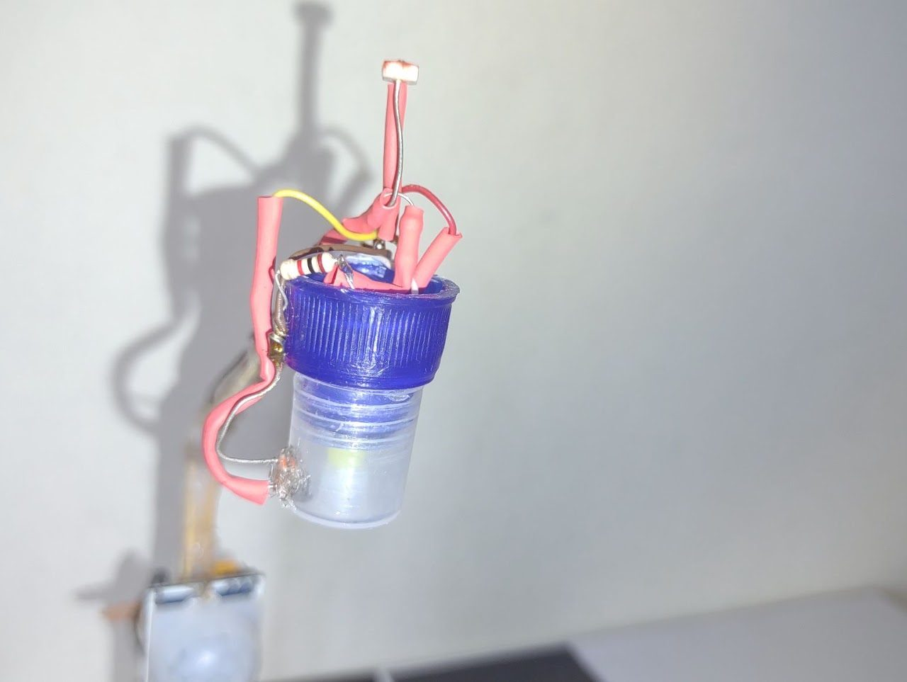
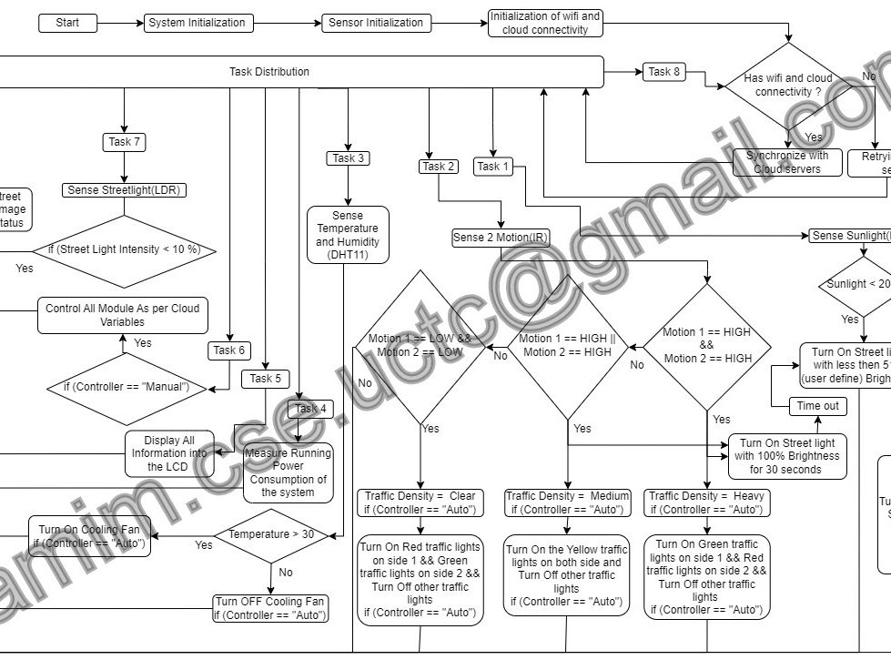
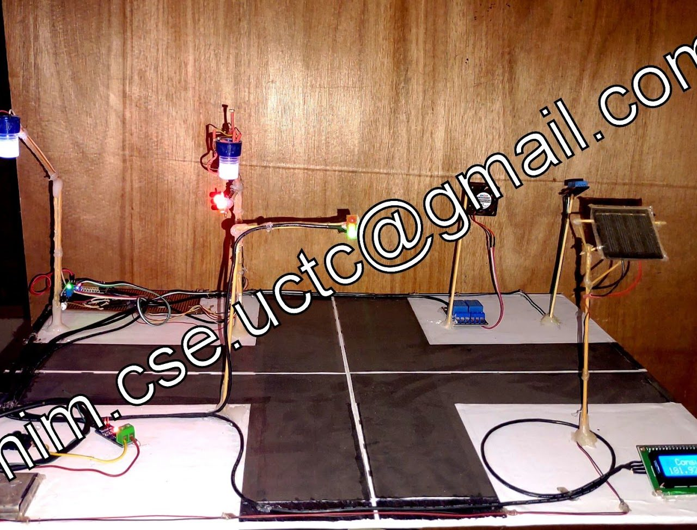
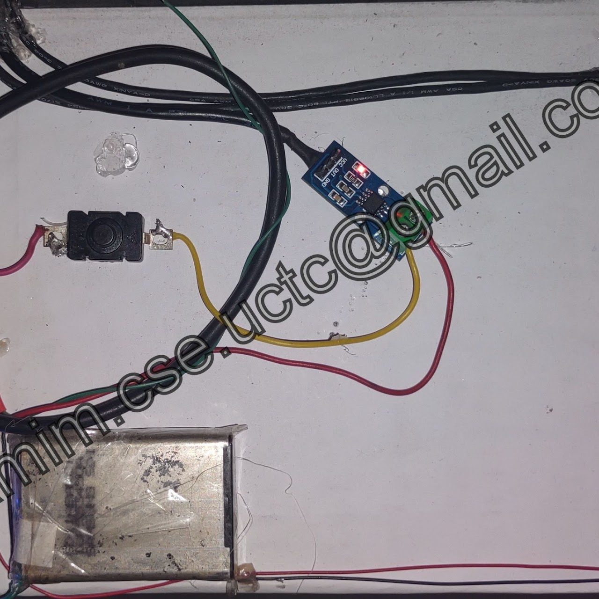
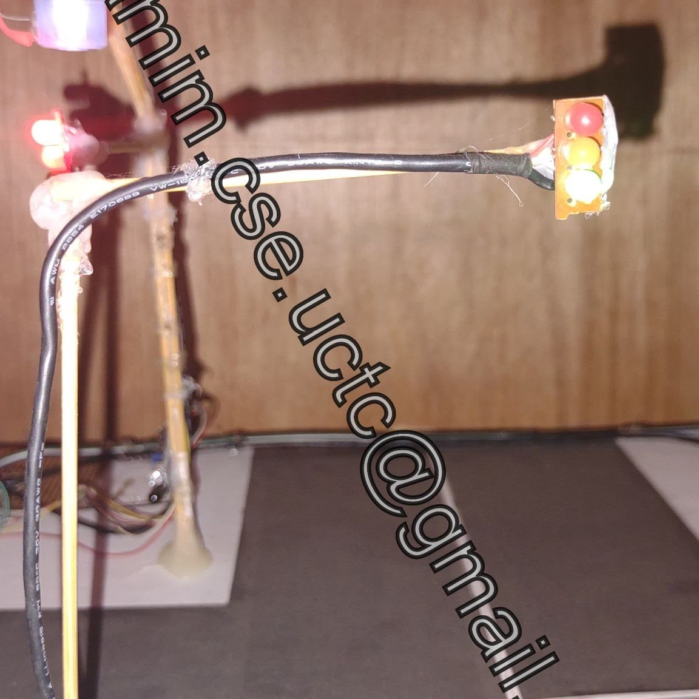
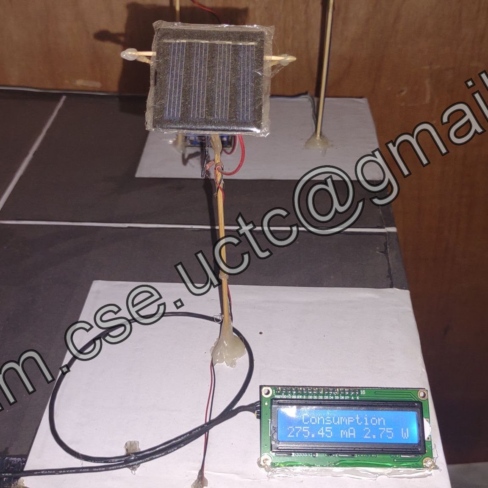
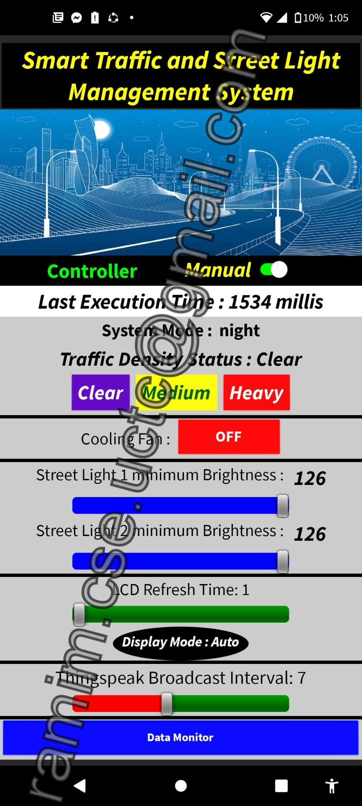
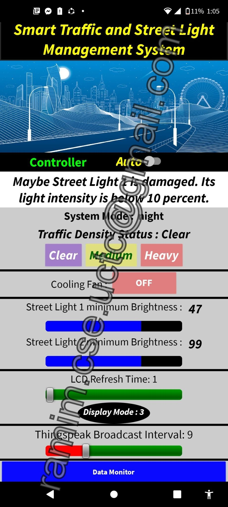
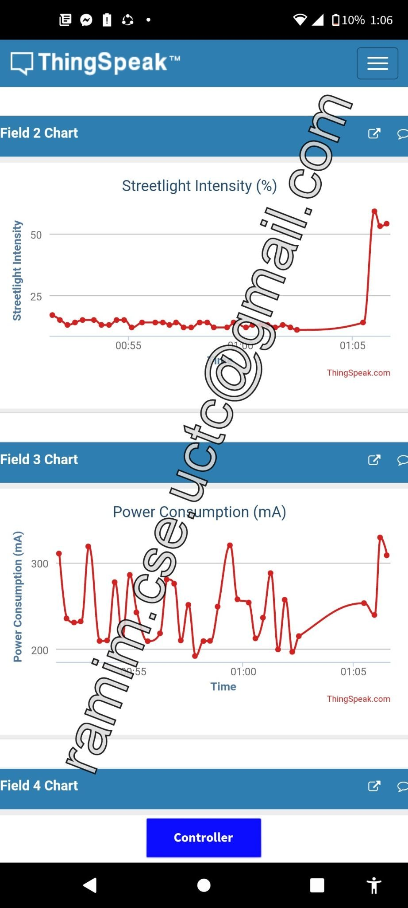

Utilities & City
Energy-Efficient Traffic & Street Light Management
An IoT system that uses solar energy and sensors to cut street-light energy use, detect faulty lamps and switch traffic signals by traffic density, with remote control from the Smart Traffic app and data on ThingSpeak.
- Type
- Smart street lighting & traffic control
- Platform
- ThingSpeak + Smart Traffic mobile app
- Power
- Solar energy system
- IoT
- LDR
- IR motion sensor
- DHT11
- ThingSpeak
- Mobile app
- Solar power
- Current monitoring
Overview
The system uses solar energy and IoT to reduce the energy street lights consume, detect faulty street lights, and automate traffic signals based on traffic density. The goal is better energy efficiency, lower maintenance costs, and a safe, reliable way to manage traffic and street lighting.



How it works
A microcontroller processes the sensor data and makes the control decisions. LDR, IR motion and DHT11 sensors provide temperature, humidity, sunlight intensity and street-light intensity.
- Automatic street lights: street lights turn on automatically based on the sensor readings.
- Motion-based dimming: lights dim to save energy depending on motion on the road.
- Fault detection: faulty street lights are detected automatically.
- Adaptive traffic signals: signals change automatically according to traffic density.
- Current monitoring: the system tracks current consumption.
- Remote control: the "Smart Traffic" mobile app and ThingSpeak let the system be monitored, controlled and logged for further analysis from anywhere.
Hardware & stack
- Sensors: LDR, IR motion sensors, DHT11
- Power: solar energy system
- Cloud: ThingSpeak for data monitoring and storage
- App: "Smart Traffic" mobile app






Block diagrams, circuit diagrams and source code are not shared publicly.